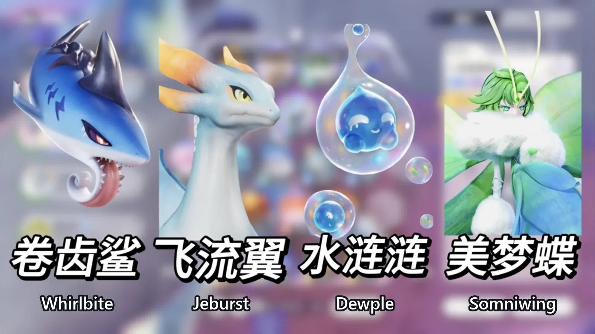
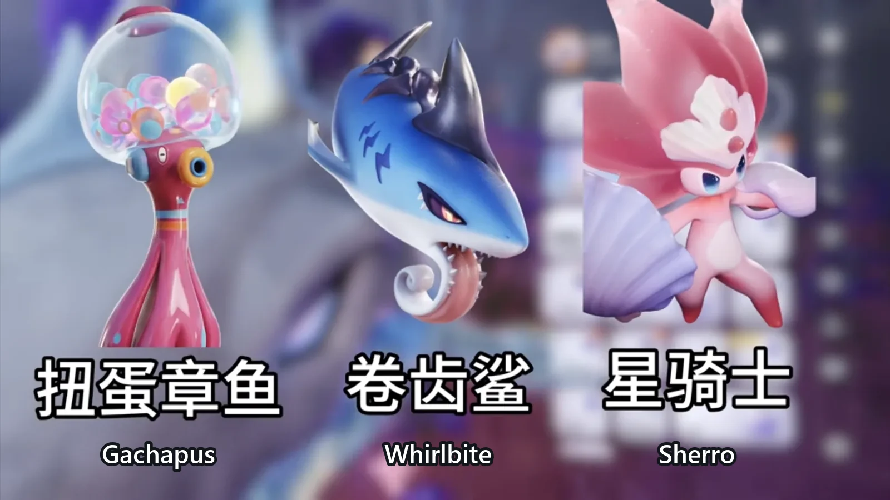
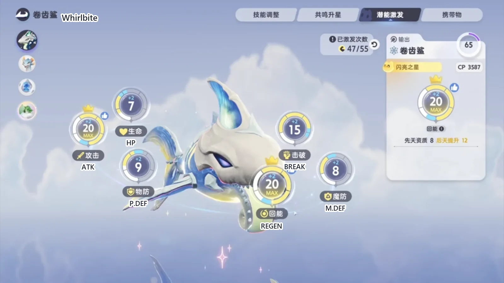
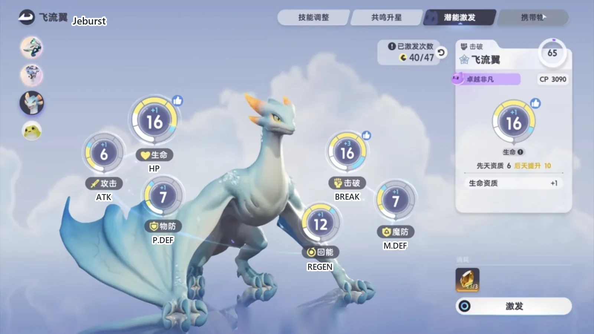
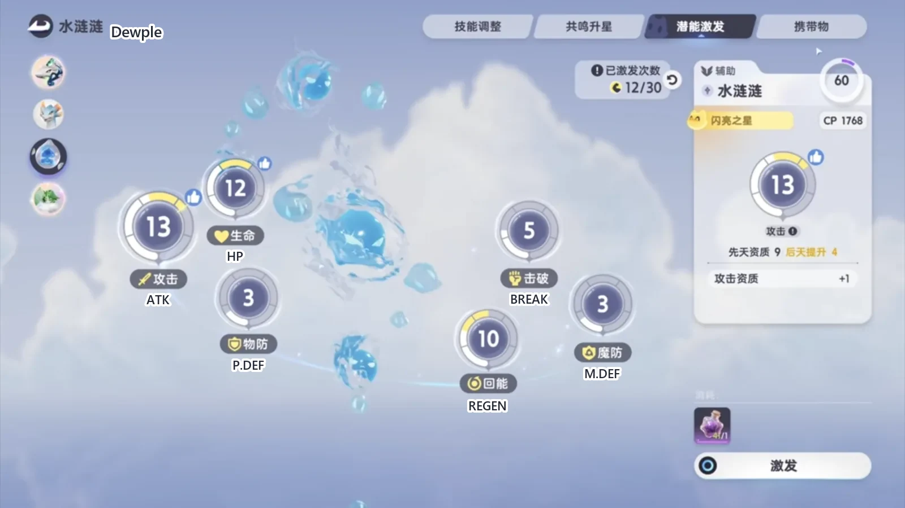
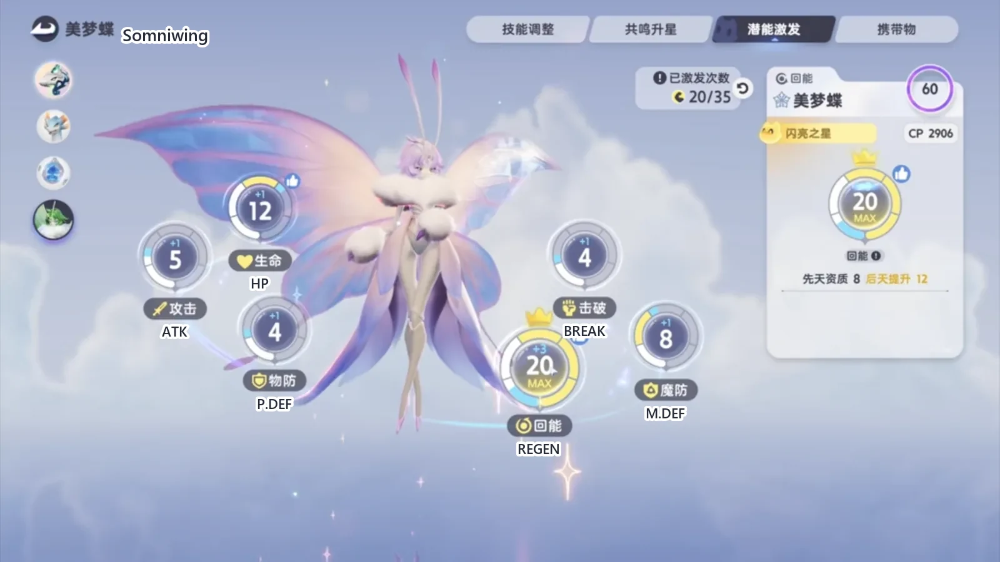

Home首页 / Guides攻略 / Aniimo's Strongest Water Team: Whirlbite Carries, and the Hardest Holo-Battle Sim Falls《伊莫》新版本最强水队：主 C 卷齿鲨，可轻松打通最高难度的全息训练
Checked核对于 November 2, 20262026 年 11 月 2 日
Aniimo's Strongest Water Team: Whirlbite Carries, and the Hardest Holo-Battle Sim Falls《伊莫》新版本最强水队：主 C 卷齿鲨，可轻松打通最高难度的全息训练
A four-Aniimo Water party for the current patch: why the carry is Whirlbite and not Gachapus or Sherro, what the other three put down, the order to cast in, and the circuits to take in the hardest Holo-Battle Sim.一套新版本的四只水系阵容：主 C 为什么是卷齿鲨而不是扭蛋章鱼或星骑士，另外三只各负责什么，按什么顺序出手，以及最高难度全息训练里该拿哪些回路。
This party does one thing. Three teammates lay down Water Debuff, cut the target's water resistance and keep the energy coming, and Whirlbite spends all of it. On the hardest difficulty of Holo-Battle Sim it walks through the run; Holo-Battle Interlink and the open-world bosses take the same four without changing a thing.这套阵容只做一件事 —— 三只队友把水元素异常、水抗削减和能量铺好，卷齿鲨一直泡在最高增伤里打爆发。拿它去打最高难度的全息训练很轻松，全息协战和大世界 BOSS 也照搬同一套。
The patch leaves three Water carries to choose from: Whirlbite, Gachapus and Sherro. Take the shark. It sits in T1, its numbers and its feel both check out, and the other two are a step behind. If you already built Sherro, reset it after this update and put it aside for now.新版本能用的水系主 C 有三个：鲨鱼、扭蛋章鱼、星骑士。选鲨鱼。它的强度能排到 T1，手感和数值都在线，另外两只差一截。之前养过星骑士的，趁这次更新把养成重置掉，先放一边。

The carry is Whirlbite, and nobody else主 C 只认卷齿鲨
Put the three side by side and Gachapus (Water · DPS) is the first one out. Its skills cost too much energy, and whether the damage lands at all is a coin flip. In Holo-Battle Sim, in Interlink, and in the PVP that opens later, it does not hold its ground — even this round's Interlink buffs, which look tailor-made for it, do not push it over the line. Unless you simply like it, do not build it.三个候选摆在一起，扭蛋章鱼（Gachapus，水 · 输出）第一个出局。它的技能能耗太高，伤害能不能打出来全靠概率。全息训练、全息协战，还有后面要开放的 PVP，它都不太站得住；哪怕这一期协战的 buff 是给它量身做的，也没到超模那一步。除非你就是喜欢它，不然不用养。
Whirlbite (Water · DPS) is the core of this party, and Sherro (Water · DPS) is last patch's answer stepping aside for this one.卷齿鲨（Whirlbite，水 · 输出）是这一套的核心，星骑士（Sherro，水 · 输出）是旧版本留下来的答案，新的这一版里让位。

Stage six is enough for Whirlbite卷齿鲨养到六阶段就够
Six stages plus a single Phenomena Crystal lands somewhere around 3600 CP, and that is plenty. Do not take it to the cap: the last step wants a second crystal and is not worth the trade.六阶段，给一个万象源晶，大概能到 3600 分。不用拉满 —— 拉满要两个万象源晶，不划算。
In Capability Awakening, the points go to ATK and REGEN first, both filled to the cap. Whatever is left can go a little way into BREAK — Interlink uses it — while in the open world and in Holo-Battle Sim the break node does very little, and for the shark itself the gain is small either way. If you are only counting value: ATK and REGEN to the cap, and put a sprinkle each into HP, P.DEF and M.DEF.潜能优先点攻击和回能，把这两格顶满。剩下的可以分一点给击破，全息协战用得上；大世界和全息训练里点击破意义不大，对鲨鱼本身的提升也有限。只讲性价比的话，攻击和回能点满就够了，生命、物防、魔防随便分一点。
The held item is the Omenbone Flute from the new map. Nothing fits the shark better right now, and if you intend to play it properly you should go and contract one. The effect that matters: every time the wearer applies Water Debuff, its elemental boost goes up 10%, up to five stacks — 50% — for 10 seconds. That is a burst window made to order, and it lines up with the boss's broken phase.携带物带新地图的异兆骨笛，这是目前最贴它的一件，想玩好鲨鱼就一定要去契约一下。核心效果是角色施加水元素异常时提高 10% 元素强化，最高 5 层，也就是 50% 的水元素强化，持续 10 秒。打爆发很合适，也正好卡在 BOSS 的破防阶段。

The shark's rhythm: get Frenzied Assault up first鲨鱼的节奏：先把狂袭点起来
The passive does a lot of work. Every time its skills deal damage they apply two stacks of Water Debuff, so the flute's passive triggers on the first hit and fills quickly. The second half: travel 40 metres in total and it enters Frenzied Assault for 25% water elemental boost; in combat a bar sits beside it and fills as you move. One line is the whole mechanic — trigger the passive, then deal the damage.被动很好用。鲨鱼的技能造成伤害时叠两层水元素异常，携带物的被动就靠这一下触发，很容易叠满。第二个效果是累计移动 40 米之后进入狂袭，获得 25% 的水元素强化；进战斗之后移动时旁边会有一条进度条，拉满就触发。记一句话就够：先触发被动，再打输出。
The ultimate drops it straight into Frenzied Assault, and while that state is up a 20% damage amp rides on top of it. The cooldown is 8 seconds, so one break window of the boss holds two casts.大招开完立刻进入狂袭，狂袭期间多 20% 伤害增幅，冷却 8 秒，BOSS 一轮破防最多能开两次。
The core skill, Wavebreaker Shark Rush, is ordinary on its own — it just throws the shark into the target. The passive is what changes it: when you enter or refresh Frenzied Assault, the skill becomes a dash clean through the target for 10% extra damage, and its icon turns blue. Only one cast per Frenzied Assault gets that, not the whole state — so if you want the shark to do damage, every core cast has to land on the enhanced one.核心技能破浪鲨袭平时很一般，就是一头扎进目标怀里。它要跟被动配合：进入或者刷新狂袭的时候，技能改成冲刺状态，多 10% 伤害，图标会变蓝。注意每次狂袭只强化一次，不是整段狂袭里都能强化 —— 所以想让鲨鱼打出伤害，每一次核心技能都得踩在强化上。
The unenhanced core skill is awkward to use: with three stacks of Water Debuff on the target it spends three and accumulates 15 metres; unenhanced it takes five for the same distance, and the stacks are gone in one cast. Once it is enhanced it spends only one stack a cast, while the passive lays down two on every hit — in a real fight the boss sits above 15 stacks most of the time, so the enhanced state never gets drained.没强化的核心技能很卡手：目标身上有三层水元素异常时，它消耗三层、累计 15 米；不强化就要消耗五层，累计的距离一样，但层数一下就空了。强化之后每次只消耗一层，而被动每次命中都叠两层，实战里 BOSS 身上基本常驻 15 层以上，所以强化状态不会被吃空。
The last skill, High-Speed Cut, is a quick spin that halves the distance Frenzied Assault needs for 15 seconds. Cast it and one core skill's own dash plus the metres it adds is enough to bring the state back up, so the enhanced cast never falls out of reach.最后一个技能高速切割：快速旋转，15 秒内进入狂袭所需的移动距离减半。开了它，一次核心技能补的距离加上技能自带的位移就够把狂袭顶起来，强化状态始终接得上。
The combo: switch to the shark only after the break连招：破防之后才切鲨鱼
The break unit puts the boss on the floor first, and only then does the shark come in. Close the distance, use the buff skill to start the passive stacking. Ultimate if it is up; if it is not, walk and fill the bar. After that it is core skill into core skill, and the loop runs itself.击破位把 BOSS 打趴之后切鲨鱼，靠上去，先用增益技能叠一下被动。这时候有大招就开，没大招就走动把进度条拉满。然后核心技能一直接，循环下去就行。
The version with the ultimate is simpler still: buff, ultimate, Frenzied Assault straight away, then keep pressing Q.有大招的版本更简单：先增益，再开大招，开完立刻进狂袭，然后一直按 Q。
Q is the core skill, and its recovery is long — mashing makes it drag more, so sprint out of it. The timing is the trap: after the enhancement the dash is long enough to carry the shark clean through the target. Do not press the next one early. Wait for the damage number, hit sprint, then cast again.Q 就是核心技能，后摇很长，连点的话拖得更明显，得用疾跑取消。但按的时机别太早 —— 强化之后那一下位移很长，会直接从目标身上穿过去。等伤害显示出来，再按 Shift，再接下一发核心技能。
The break slot goes to Jeburst击破位给飞流翼
The new map offers two break options. The other is Scrubbit (Water · Break), which is very good in Interlink, regularly putting up break values of two or three million. It is built on one skill, Frogs Love Baths, with an unremarkable ultimate that gives a shield and a little break on top. It really does work in there — but this party still gives the slot to Jeburst.新地图的击破位有两个，另一个是澡叶蛙（Scrubbit，水 · 击破）。它在协战里很好用，经常能打出 200 万甚至 300 万的击破值，走的是技能击破的路子：靠技能蛙爱洗澡吃饭，大招一般，只给个护盾再补一点击破。协战里确实能打，但这套阵容的击破位还是给飞流翼。
Jeburst (Water · Break) gets it for two reasons. One is that it looks good: it has a Tempest form and a Prismana form, so take whichever you like. The other is that it is strong — today's Holo-Battle Sim and the PVP after it both leave it standing.飞流翼（Jeburst，水 · 击破）有两个理由。一是帅，它有风暴形态和虹光形态，喜欢就换。二是强度在线，不管是现在的全息训练还是后面的 PVP，都站得住。
Four stages is enough; the Phenomena Crystals go to the carry. Within a party, raise damage and break first: those two slots eat the materials and pay them back, and every star is a real step up. Awakening goes BREAK, REGEN and HP, and the rest wherever you like.拉到四阶段就够，万象源晶留给主 C。一个队伍里优先升输出和击破，这两个位置吃材料、性价比高，升星就有提升。潜能优先点击破、回能、生命三项，剩下随便点一点。

The held item is the generic Gargantuan Horn. Jeburst has an Alpha egg — hatch it and skip the contract altogether, which saves the materials and is part of why it is the recommendation here.携带物用通用的巨兽之角。飞流翼有头目蛋，直接孵就行，这里不用契约，省材料，这也是推荐它的原因之一。
Skills: the core, Rushing Current Strike, plus either Aqua Wing Spin or Waterfall Pool.技能带核心技能腾流冲击，再加水翼旋击或者瀑落成潭。
The passive, Turbo Boost, grants one stack after any skill or ultimate and empowers the next basic attack, up to two stacks — so its loop is one skill, one basic attack. It carries a second half as well: a free ultimate every 120 seconds, a full cast that costs nothing. A boss fight opens with one and there is another two minutes later, which suits Holo-Battle Sim very well.被动涡轮增压：放技能或者大招之后得一层，强化下一次普攻，最多存在两层。所以它的循环就是一次技能接一次普攻。它还有一个被动，每 120 秒送一次不消耗能量的大招 —— BOSS 关开局就能放一发，两分钟之后再来一发，很适合全息训练。
The core skill's job is plain: it breaks. Upgraded, casting it while the ultimate's flight is up also grants an extra stack of the passive, and the loop becomes one skill and two basic attacks.核心技能的机制很直接，就是造成击破。强化之后，大招期间还能额外拿一层被动，循环就变成一次技能两次普攻。
The two contested skills, side by side. Aqua Wing Spin is the support pick: it cuts the target's Water resistance by 15% for 20 seconds, which is exactly what the last stretch of a break wants, because that is when the shark is cashing everything in. Waterfall Pool is a self-buff for 25% break efficiency. The spin is worth more — that resistance cut is real damage for the party, and both Holo-Battle Sim and Interlink can use it.两个争议技能摆在一起看。水翼旋击偏辅助，降低目标 15% 的水元素抗性，正好用在 BOSS 最后破防那一段给鲨鱼增伤；瀑落成潭是自身增益，加 25% 的击破效率。带水翼旋击收益更高，减抗那一下是实打实给队友加伤害的，全息训练和协战都用得上。
The ultimate puts it into Jet Flight for 10 seconds: it is airborne and its basic attacks are empowered, so after the ultimate it is skill first and basic attacks second.大招开完进入喷射状态，持续 10 秒，这时候是飞行状态、普攻被强化，所以开大之后先技能再普攻。
The rhythm: open the state with the ultimate — the free cast is going nowhere — then skill, basic, skill, basic, and once the passive is stacked, one skill and two basic attacks. When the boss is close to breaking you can leave the flight early, or add one more skill. The double-ultimate line runs: skill, leave early, throw the buff skill — the one carrying the 15% water resistance cut — and then switch to the shark.节奏上：进状态先给一发大招，两分钟一次的免费大招收着也没用；然后是技能、普攻、技能、普攻，强化了就一次技能两次普攻。头目快破防的时候可以提前结束飞行，或者补一个技能。双大招那一套是先技能，提前结束，再丢一个增益技能 —— 那下带着 15% 的减水抗 —— 然后切鲨鱼。
Dewple: its only jobs are the damage boost and the stacks水涟涟：只负责增伤和叠层
Dewple (Water · Support) can skip Resonance entirely: materials are scarce right now and the return does not justify them. One point of ATK in Awakening, and the rest can stay empty.水涟涟（Dewple，水 · 辅助）的共鸣升星完全可以不升，一来现在材料少，二来性价比不高。潜能点一下攻击，其他可以不点。
For the held item, a purple Ferocious Fang will do; a spare maxed Spirited Feather is worth considering too, for the 20% cooldown reduction it gives — but taking the feather means putting 15 points into REGEN. Neither one needs a contract: nothing in this patch fits it well, so do not spend the materials.携带物方面，有紫色的猛兽之牙就给它带；有多余的满级羽毛也可以考虑，为了吃那 20% 冷却减免 —— 带羽毛要把回能点到 15 点。无论带哪一个都不用契约，现版本没有特别合它的携带物，不用浪费材料。

Skills: the core, Tide Resonance, plus the third one, Whirlpool Dewdrop.技能带核心技能潮汐共鸣，再加第三个技能悬水路滴。
The passive is the damage boost and nothing else: while a Water Aniimo is hitting a target that carries at least 10 stacks of Water Debuff, each stack adds to the Water elemental boost. The core skill gives the whole party a Water damage boost and adds one stack per second to everything nearby; upgraded it runs 25 seconds instead of 15, but nothing in this patch upgrades it, so leave the upgrade alone — it works fine without.被动简单，就是增伤：鲨鱼打水元素异常 10 层以上的目标时提高伤害。核心技能开完给全队加水元素增伤，并且每秒对周围补一层水元素异常；强化能多 10 秒持续，但没有特别适配的携带物，不用管强化，不强化也照样用。
Whirlpool Dewdrop does two things. It gathers: one pull, the same shape as Witchin's (Dark/Grass · Regen) black hole, except this one only pulls once — which is enough in Holo-Battle Sim. And it stacks Water Debuff: one stack per second on everything inside the field for 6 seconds.悬水路滴有两个效果。一是聚怪，类似巫帽草（Witchin，暗/草 · 回能）的黑洞，但它只能聚一次，全息里也够用。二是叠水元素异常，6 秒时间内每秒给区域里的目标加一层。
The ultimate is the plainest card in the party: 12 stacks of Water Debuff in a single cast, the same idea as Flamerion's (Fire · Regen). Throw it just before the boss's gauge breaks.大招更简单，一次叠 12 层水元素异常，和幻焰灵（Flamerion，火 · 回能）的大招一个路子，一般压在 BOSS 快破防之前甩出去。
Somniwing: cap REGEN and you are done回能位美梦蝶：把回能点满就够
Somniwing (Wind/Grass · Regen) wants no thought at all. Resonance to stage five, no Phenomena Crystals. In Awakening put everything into REGEN and cap it; the other nodes can stay untouched. It takes a feather, and whether it is contracted barely matters, so save the materials. One skill is enough — the core, Ethereal Light Wave — because both the skill and the ultimate hand energy back.美梦蝶（Somniwing，风/草 · 回能）不用多花心思。共鸣拉到五阶段，不用给万象源晶；潜能只点回能，点满，剩下想怎么点怎么点，不点也行。携带物带羽毛，契约不契约差别不大，省材料。技能只带核心技能蝶梦光波，一个就够 —— 技能回能，大招也回能。

The order, end to end一套打出来的顺序
However the fight opens, in Holo-Battle Sim or in the open world, start on Somniwing for one cast of energy. Switch to Dewple for the core skill and then the gather, letting the stacks build in between. Jeburst comes next for the ultimate, then basic, skill, basic, skill. Drop off, top the core skill up, give Jeburst one more swing, then switch to Whirlbite and take the ultimate.开局不管打全息还是大世界，都先上美梦蝶挂一下；切水涟涟，放核心技能，再放聚怪，中间顺着把层数叠上去；切飞流翼放大招，然后普攻、技能、普攻、技能；下来刮一下，补核心技能；飞流翼再刮一下，切鲨鱼，开大招。
Take the open-world boss Irisal (Grass · DPS) as the example: against this one, leave the horn off Jeburst, because it evolves too fast for it to be worth it.拿大世界 BOSS 花舞兰（Irisal，草 · 输出）举例，这一只就不给飞流翼带巨兽之角了，进化速度太快。
Holo-Battle Sim: the 聚能 core, and circuits that keep you alive全息训练：核心带聚能，回路往保命偏
For the core, take 聚能护臂 — the armguard circuit that comes with the 聚能 set, the one paired with the grass carry Irisalis (Grass · DPS). The electric team makes the same choice for the same reasons.核心选聚能护臂，也就是聚能和草系的彩虹鸢尾（Irisalis，草 · 输出）。这套选择放在电队里也是同一个思路。
The line-up does not change: Whirlbite, Jeburst, Dewple, Somniwing. Whirlbite sits above 3000 points, Jeburst at 2600 with a Ferocious Fang, and Dewple and Somniwing one feather each.阵容还是卷齿鲨、飞流翼、水涟涟、美梦蝶。卷齿鲨 3000 多分，飞流翼 2600 分、带猛兽之牙，水涟涟和美梦蝶各带一根羽毛。
Dewple's most important skill in here is Whirlpool Dewdrop. It gathers on its own, so this party does not need to drag a Witchin along the way other parties do — there is no reason to bring one.水涟涟在这里最关键的技能是悬水路滴。它能自己聚怪，所以不用像别的队伍那样再多带一只巫帽草，没必要。
The early waves are nothing; fight them head-on. Take the purple 聚能 first and then keep taking 聚能, and since difficulty is low this early, pick up 高能战斗 while you are there. Past the third layer keep going the same way: besides the 聚能 circuits, take 铁臂, 活力 and the other options that lean defensive. This party has no heal and no shield, so take what the mode offers and fill the gaps.前面的小怪不用担心，正面打就能过。开局选紫色聚能，后面接着选聚能，前期难度比较低，顺手再选高能战斗。第三层通关之后继续选；除了回路里的聚能，还可以拿铁臂、活力，以及别的偏保命的选项 —— 这套阵容没有回血也没有回护盾，全息里该补就补。
The fourth-layer boss is comparatively easy. Open with the ultimate to build energy, cast it again, and when it is about there switch to the regen unit; bring Dewple in for the buff, take one swing, ultimate, then a second ultimate, and it is nearly gone. From there keep taking 聚能: 聚能护臂 can come, and so can 铁臂终端; take 超兵隐形 whenever it shows up, and the 活力核心 circuit is wanted too, because there is no healing skill in the party.第四层 BOSS 相对简单。开局先放大招攒能量，再放一个，差不多了换回能位；切水涟涟挂个 buff，先刮一下，开大招，再开第二个大招，差一点就秒了。后面继续选聚能，聚能护臂可以拿，铁臂终端也可以，超兵隐形拿得到就拿，活力核心回路同样要，因为没有治疗技能。
By layer sixteen the board reads: 聚能 at twelve, the core only at tier two; one 超频, taken deliberately for the HP; three 铁壁 for both defences, energy and HP; one 不破, which gives back a share of max HP when you take damage; 无双 for damage; and 财富 last.到第 16 层看回路：聚能刷满了 12 个，核心只到 2 阶；超频 1 个，加生命，是专门选的；铁壁 3 个，加双防、加能量、加生命；不破 1 个，受伤回最大生命；无双提高伤害；最后是财富。
While fighting, dodge. This wave's boss buff is damage — 20% more ATK — and with no HP stacked and no healing skill, eating it is a bad trade. When it is about there, put the 12 stacks on again, break, ultimate, then one more, and the wave loses a little over a third. Dodge the high-damage skills outright instead of trying to tank them. To finish: two boss markers, fly up for the last wave to avoid it, and clear it with the ultimate.打的时候记得躲技能。这一波 BOSS 刷的是增伤，加 20% 攻击力，而这套阵容没堆生命、也没有回血技能，硬吃那一下不划算。差不多的时候再挂 12 层 buff，打破，开大招，再来一个，一波能削掉三分之一多一点。高伤害的技能直接躲，别去接。收尾是两个 BOSS 标点，最后一波飞起来躲一下，大招清掉。
Put them in this order and the party holds按这个顺序摆，队伍就不会散
Start with the positions. Whirlbite is the carry, Jeburst breaks, Dewple lays down the damage boost and the stacks, Somniwing supplies the energy — four jobs, one each, nobody stepping on anybody.先看位置。主 C 认准卷齿鲨，击破给飞流翼，水涟涟铺增伤和层数，美梦蝶供能，四只各管一摊，谁也不抢谁的活。
Then the priority. Materials go to damage and break first, and the Phenomena Crystals go only to the carry; the support's and the regen unit's Resonance and contracts are all skippable, and what you save goes into Awakening. Either cap ATK and REGEN, or cap BREAK, REGEN and HP, and treat the other nodes as patches.再看优先级。材料先砸输出和击破，万象源晶只给主 C；辅助和回能的共鸣、契约全部可以省，省下来的东西丢进潜能。潜能要么顶攻击和回能，要么顶击破、回能、生命，剩下的格子只当补丁用。
And the rhythm. Nobody takes anything before the break; those few seconds belong to the shark. Get Frenzied Assault up, land every core cast inside the enhanced state, and cancel the recovery with a sprint. Run it once in that order and the hardest difficulty of Holo-Battle Sim plays exactly like this.最后看节奏。破防之前谁也别抢，破防那几秒才是鲨鱼的。先把狂袭点起来，踩住强化再按 Q，后摇用疾跑掐掉。按这个顺序走一遍，最高难度的全息训练也就是这么打下来的。
More guides相关攻略
- Aniimo's Water Team: Three of the Four Are There to Set Up Sherro's One Sword《伊莫》水系配队：一剑流星骑士，三只铺路只为最后那一剑 — A four-Aniimo Water party built around one damage dealer: what Piopiota, Panpanta and Turbo each lay down before Sherro comes in, and the order to switch them in.一套四只的水系阵容，全部围绕一个输出位搭：星骑士进场之前，漂漂獭、胖胖獭、蓬蓬羊各负责什么，以及换人的顺序。
- Aniimo Tier List: The 19 Creatures to Build First《伊莫》强度巅峰榜：几百小时之后，新手先练这 19 只 — A personal tier list of 19 Aniimo, grouped by the job each one does — damage, break, healing and support, energy regen — with every element and role checked against the game's own records and the ranking left as my own.一份个人向的强度榜单，按输出、击破、治疗辅助、回能分成四组。每只都逐一对过游戏里的属性与定位，哪一段是能查的、哪一段是我自己的判断，文中分开写。